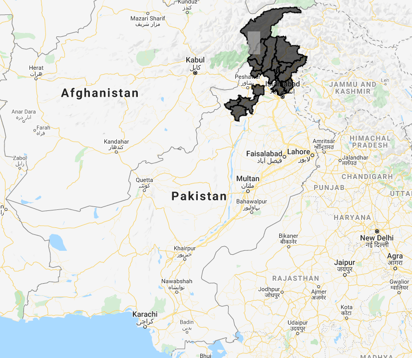
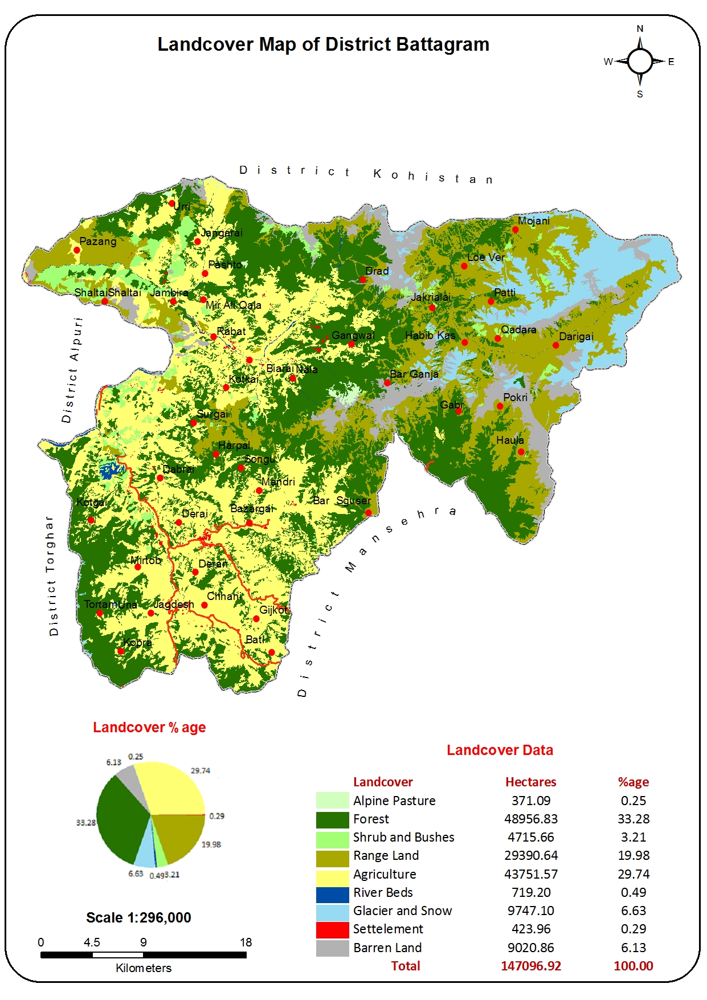
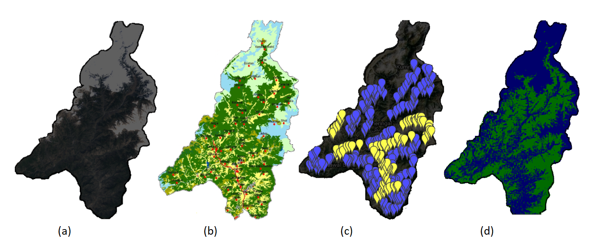
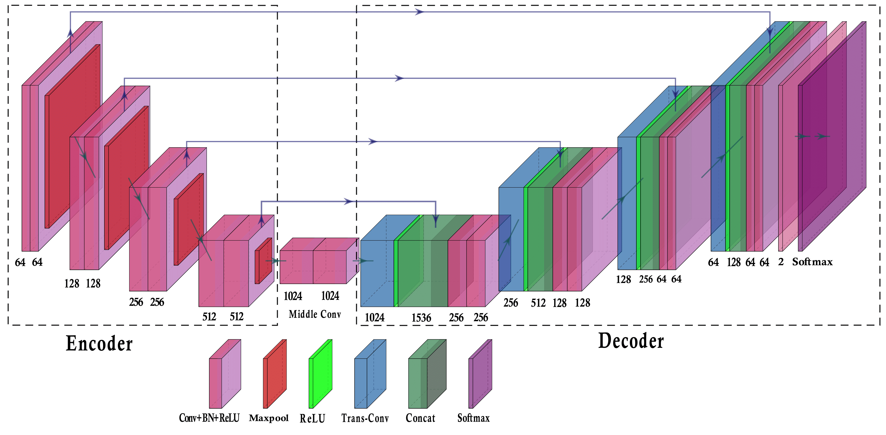
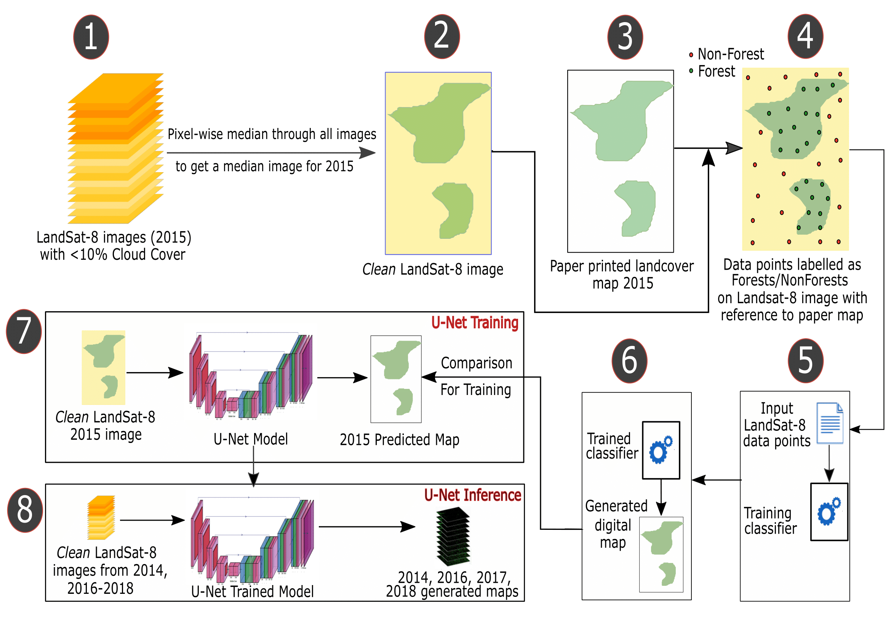

Data driven Forest Cover Change Analysis
for
Billion Tree Tsunami Afforestation Project, Pakistan
Problem Statement
The importance of forests on Earth cannot be emphasized enough. Forests cover roughly 30% of the Earth’s surface and are home to 80% of terrestrial species of animals, plants and insects. However, due to human development activities and natural disasters, these forests and ecosystems associated with them are under significant pressure of degradation and desertification. Around 2.3 million square kilometers of world’s forest cover has been lost between 2000 and 2012 causing not only financial losses but also severely damaging associated biodiversity and ecosystems. Unlike developed countries, the developing countries do not have the resources or budgets to conduct manual surveys to monitor forest change trends for long periods and hence they rely on estimations. We have developed a reliable method based on local data, machine learning and open source tools for proper quantification of forest cover change which will help developing countries in making more accurate estimation of the forests in order to counter challenges like climate change.
Pakistan is among the worst hit countries by forest degradation and deforestation and if appropriate measures are not taken, the country is likely to lose all of its forests in the next thirty to fifty years. To overcome this problem, the provincial government of Khyber Pakhtunkhwa (KP) initiated the Billion Tree Tsunami (BTT) afforestation project. We have developed a satellite based image analysis approach to quantitatively monitor the forest cover change as a result of BTT afforestation in KP districts of Pakistan. The method is based on state-of-the-art deep convolution neural networks and semantic segmentation models. The analysis is completely data driven and has been performed using freely available Landsat-8 satellite imagery showing an average forest cover improvement of around 39% from 2014 to 2018. The change detection results and deforestation/afforestation hotspots identified during our analysis provide important insights into the forest change trends that will help in filling gaps in policy making which is essential for ensuring sustainable management of forests in Pakistan.
Study Area
Khyber Pakhtunkhwa (KP) province of Pakistan has the highest land area covered with forest at provincial level. In 2014, the Billion Tree Tsunami (BTT) Project was launched by the KP government in response to the International Bonn Challenge which aims to restore 150 million hectares of degraded and deforested land in the world by 2020 and 350 million hectares by 2030. It was initiated by the German government and the International Union for conservation of Nature (IUCN) in 2011 and was later extended by New York declaration on Forest at the UN Climate Summit in 2014. There are 25 districts in KP province in which the BTT afforestation drives have been carried out. Our work focused on 17 out of 25 BTT districts that had a considerable forest cover to begin with and included Hangu, Karak, Kohat, Nowshehra, Battagram, Abbottabad, Kohistan, Haripur, Tor Ghar, Mansehra, Buner, Chitral, Lower Dir, Malakand, Shangla, Swat and Upper Dir districts.

Figure-1: The BTT districts studied in this work are highlighted in gray color on the map of Pakistan. In total, 17 out of 25 districts with more than 1% forest cover were studied.
Available Global and Local Data
In order to make our forest cover change analysis locally optimized for Pakistani regions, we used publicly available land cover maps from the government of Pakistan. These maps look like the kind of material you would find in an elementry Pakistan Studies text book. The available land cover maps for the BTT districts were only for the year 2015 which meant that in order to perform a long-term change analysis, we needed to generate forest cover maps for the whole period for which the BTT project existed when this research was conducted, i.e., 2014-2018. This is where machine learning comes in. If a machine learning model is able to learn how to generate forest cover maps using satellite images of BTT districts and the available land cover maps of these districts, then it should be able to generate forest cover maps for these districts for the whole period from 2014 to 2018 if satellite images for these years are available.

Figure-2: Land cover map of Batagram district, Khyber Pakhtunkhwa; one of the available land cover maps of the BTT districts.
A number of free-to-use satellite sources are available for research purposes and one of the most popular ones is the Landsat-8 satellite. The Landsat program is owned by NASA. It has been running since 1972 and Landsat-8 was the latest of its series of satellites at the time when this research was conducted. It provides images at a spatial resolution of 30 meters per pixel and revisits all places on Earth after every 16 days. We have used Landsat-8 imagery from 2014 to 2018 for all the 17 districts of the BTT project for this research.
Digitization of Available Local Data
The problem with our local government data maps as shown in Figure-2 is that they can't be readily used for applying machine learning or statistical analysis because they are not in a format that computers can understand for analysis purposes; they are only meant for visualization. In order to transform the data to a more analytically useful format, we semi-automatically digitized these maps using Google Earth Engine and produced our own digitized copies of these maps ready for experimentation. This process involved labelling a small dataset of forest and non-forest pixels on Landsat-8 images of BTT districts for the year 2015 and then using conventional machine learning models such as support vector machines and random forests to learn from this small dataset and using them for labelling all the pixels in the entire images. This generated the digitized versions of all government provided maps for the BTT districts for the year 2015.

Figure-3: Digitization timelapse from left-to-right. (a) The Landsat-8 satellite image of one of the BTT districts from 2015 (b) publicly available land cover map of the district (c) digitization of the land cover map in progress (d) digitized map of the district ready for analysis.
Deep Learning and Semantic Segmentation
After performing comparisons of various statistical machine learning models with deep learning based semantic segmentation, we decided to go forward with the latter. There are two reasons for this design choice that we learnt during our algorithm comparisons. Firstly, deep neural networks are defined by layers and operators, such as 2D and 3D convolutions, linear dot products, etc., and they extract features from the training data automatically and hence hand-crafted features are not needed as is the case with most statistical models. This results in a high-level of abstraction in designing neural network architectures and modern deep learning frameworks such as Pytorch and Tensorflow allow these networks to be designed quickly. Secondly, deep neural networks can be fine tuned, and so pre-trained neural network layers that are trained on larger but logically similar datasets may be used in designing custom deep learning architectures since these pre-trained layers converge faster on new datasets. Our forest cover segmentation model is based on the popular deep neural network model UNet and is implemented in Pytorch framework.
A UNet is called a "U-Net" because of the U-shaped representation of its model. The first half of the network is an encoder, a fully convolutional feature extractor from the VGG network with its classification head (i.e. full-connected layers and softmax) removed. An encoder may be viewed as multiple modules stacked one after the other such that the output of a given module becomes the input of the next one. The operators used in all modules of this encoder are 2d Convolution, Batch Normalization, Rectified Linear Unit (ReLU) activation and Max Pooling. Four of such modules comprise the encoder of our UNet, therefore it is a four-stage encoder. The other half of the UNet, the decoder, is the mirror image of the first half; a four-stage decoder. Each module in a decoder consists of Transposed Convolution operation followed by a copy-and-fuse connection between the corresponding stages of encoder and decoder, followed by 2d Convolutions, Batch Normalization, ReLU and Max Pooling. This concatenation operation of encoder and decoder outputs allows the decoder to utilize the features extracted by the encoder at subsequent stages. The encoder (dotted square on the left) is where the input multispectral satellite image is downsampled and encoded into a smaller dimensional vector. The decoder (dotted square on the right) decodes this vector and produces full resolution segmentation for the input image. Each decoder module concatenates its output with the encoder output at the corresponding stage and the final decoder output is passed through a Convolution again followed by a softmax layer which normalizes the output probabilities for both classes (forest/non-forest) at each pixel.

Figure-4: UNet architecture developed for our work. The encoder is the set of modules to the left and the decoder is the set of modules on the right hand side. The upsampling in the decoder is done by using a transposed convolution operator with a stride of 2. The arrows indicate tensor outputs from the encoder being copied and concatenated with the transposed convolution decoder output along the depth dimension. The input to this UNet is an 18 dimensional multispectral satellite image from the KP region.
Using Trained Model for Generating Forest Cover Maps
We used Landsat-8 images from 2015 for the BTT districts along with our digitized maps for training our UNet model for semantic segmentation and it became capable of recognizing forest cover in a given satellite image of a BTT district. This model performed pixel-wise detection of forest cover to label all the pixels in a Landsat-8 image that it classified as forest with approximately 85% accurary, which is good considering the low resolution of these images (30 meters per pixel).

Figure-5: Complete flow chart of the proposed pipeline for forest cover change analysis of BTT project. Set of all images in 2015 with less than 10% cloud cover are filtered and pixel wise median values are calculated for each band to generate a composite image. This image represent clean image of the year. The paper printed map is taken as a reference and forest/non-forest data points are labelled on this clean Landsat-8 image. This small set of data points is used to train a classifier that labels all the rest of the pixels in the clean Landsat-8 image. The result of this labelling is a digitized forest cover map. Then a Unet model is trained with clean Landsat-8 district images of 2015 as input and the target labels are the digitized forest cover maps of 2015. The trained model performs inference on the clean Landsat-8 district images of 2014, 2016, 2017 and 2018, yielding a temporal series of forest cover maps.
The land cover maps that the government made public were only for the year 2015. Since we already had the digitized maps of 2015, we used our trained model to detect forest cover in satellite images of BTT districts for the years 2014, 2016, 2017 and 2018, assuming that the model is eligible for such detection since the Landsat-8 sensor has remained consistent from 2014 to 2018. We generated forest cover maps for the whole period from 2014-2018 for 17 districts of the BTT project using our trained UNet model. This data may be used to detect forest cover change between consecutive years as well as to generate multi-temporal trends for the five year change pattern.
Cover Change Detection using Generated Forest Cover Maps
The maps generated in the last step were used to generate forest cover change maps between 2014 and 2018 that give a commulative loss/gain percentage per district area during these five years.
The UNet model is trained and tested only on images from year 2015 since that is the only data for which the ground truth is available. Trained UNet model performed inference on clean images from year 2014, 2016, 2017 and 2018. These clean Landsat-8 images were created through pixel-wise median on the full series of images for one whole year for every given district under consideration. The forest cover percentage graphs for the BTT districts from 2014 to 2018 are given in this graph.
Observations and Discussion
The complete change detection results are given in the following table. Hangu is the only district to show a negative change in forest cover from 2014 to 2018. The rest of the districts show an increase in forestation. The effective change percentage (last column) is the percentage change in forest cover compared to the forest cover in 2014. Hence some changes are more than 100% because forest cover in 2014 was quite low. The 14-18 LP% and 14-18 GP% columns show the forest loss and gain percentages respectively. In all districts except Hangu, the forest gain pixel percentage is more than the forest loss pixel percentage, which explains the overall forest gain seen in most districts. The forest cover for all districts increases from year 2014 to 2015, then drops in 2016, then increases again in 2017 and drops below last year again in 2018 but not as much as it dropped earlier.
Wrong predictions for forest cover maps were generated for some districts as well, particularly in Northern Pakistan. In regions like Nowshehra, Kohat, Karak, forest predictions were less than 1% for 2014 and even upto 2% forest cover prediction in 2018 led to massive change percentages, in thousands of percents with respect to 2014 forest cover. This is primarily due to the reason that the regions in upper North Pakistan are covered with snow and their Landsat-8 images had heavy cloud cover, that can lead to such noisy predictions. This is generally the problem with using deep learning for this kind of a problem, and it can be fixed by training on the same district area cross-temporally for other years as well once their ground truth is available. It should be noted that such detailed forest cover change statistics were not available for BTT project before this work and this is considered a first attempt to assess the forest cover change of BTT project at a reasonably high spatial resolution. These results, of course, are not 100% accurate since we are relying on our digitized maps accuracy and the assumption that our cross-temporal forest cover predictions are accurate enough to carry out such a study.
One artifact seen in our maps is that the percentage forest cover jumps from years 2014 to 2015, came down closer to year 2014 percentage cover again in year 2016 and then increased normally from years 2016 to 2017 and 2018. This artifact is clearly visible in the cover maps of district Chitral and district Kohistan. In our case we are constrained by the fact that only the local land cover data for year 2015 is available. Such artifacts can be resolved by cross-temporal training on labelled Landsat-8 data of multiple years i.e. 2014, and 2016-2018. Since we are relying on the data from year 2015 only (because that is the only available data) and generating forest cover maps for years 2014, and 2016-2018, then any kind of noise, such as labelling errors, seasonality effects or cloud cover taken from year 2015 data could have generated this anomaly. We surmise that this would normalize or die out asmore training data becomes available since in that case there would be a greater chance of receiving images of the same district from different years that have different seasonality effects in them even when they were cleaned by cross-temporal median filtering within one year of data. The classification model would then learn these seasonality effects alongside the classification task and would be more robust.
Future Prospects
Map digitization. Our digitization procedure's accuracy can be improved. The maps we generated were based on visual inspection only so no numerical errors were calculated. We are currently working on generating ground truth maps with multiple land cover classes in collaboration with GIS experts from Institute of Geographical Information Systems (IGIS), NUST, Pakistan.
Semantic segmentation. We investigated the use of deep learning based UNet topology only for semantic segmentation. Other models, such as SegNet, and Mask RCNN can be explored for more accurate forest cover map predictions.
Cross-temporal validation. We could not verify our results cross-temporally because of inavailability of data. Accurate comparisons will be made when we have yearly ground truth data for all the years from 2014 to 2018. That would also allow us to train the classification network cross-temporally for better forest cover predictions.
Application in other problems. Multi-class land covermaps can allow the same approach to be applied using image profiles from Sentinel-2 or Landsat-8 and even SAR data to monitor the change in water bodies, glaciers, yearly urban growth, etc.